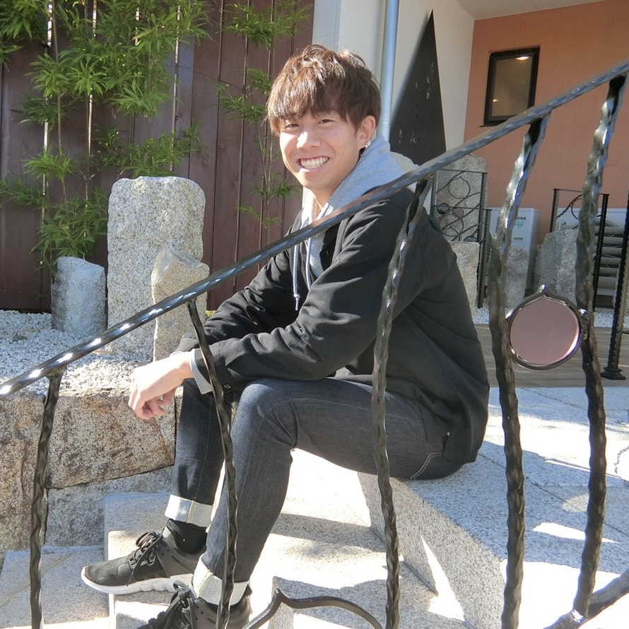

Profile

千田 究太郎
1997年生まれ｜三重県出身 | フリーランスWebエンジニア
名古屋工業大学工学部物理工学科▷IT・Web関連会社入社▷新卒1ヶ月で会社を退職
▷Web制作を独学で学び、フリーランスWebエンジニアに転身。
「質」や「スピード」だけでなく、お客様の期待以上のものを提供させていただきます。
また、お客様との丁寧なコミュニケーションを常に心がけ、最後まで責任を持ってお仕事に取り組ませていただきます。
#フルマラソン3時間半 #野球好き #カメラ好き